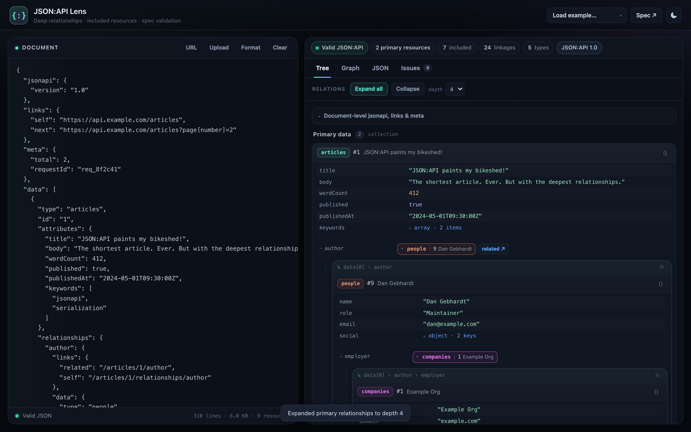

Recursive relationships
Follow author → employer → owner across included resources at any depth.
Cycles are detected and explained instead of looping forever.
Paste a JSON:API response and inspect every resource, relationship, and included object — recursively. Validate the document against the spec, copy resolved plain JSON, and explore the relationship graph. No signup, no upload: everything runs in your browser.

A generic formatter shows nested braces. Lens understands type/id linkage,
compound documents, and the rules in the JSON:API specification.
Follow author → employer → owner across included resources at any depth.
Cycles are detected and explained instead of looping forever.
Structural checks for JSON:API 1.1: types and string ids, reserved members, relationship shape, duplicates, full linkage, and error documents — each with a JSON pointer.
Copy any resource as plain JSON with attributes flattened and relationships inlined. Missing targets and cycles are marked explicitly, so the output is safe to paste anywhere.
See the whole compound document as a layered graph. Pan, zoom, inspect edges, and reveal unresolved sparse-linkage targets when you need them.
A relationship may legally point to a resource that is not included. Lens keeps those targets visible as missing chips with the exact pointer instead of silently dropping them.
Tested with responses up to 50 MB and hundreds of thousands of resources. Paged rendering and preview limits keep the page responsive instead of freezing the tab.
Paste a response into the editor, drop a .json file, or fetch a URL directly. Files are
parsed locally and never uploaded.
Click a relationship to follow it, or use Expand all up to your chosen depth. Every hop keeps a breadcrumb and a JSON pointer.
Review the Issues tab for spec violations, then copy resolved JSON for a single resource or the whole document.
JSON:API moves relationship data out of the resource and into resource linkage. To understand a
response you have to resolve type and id pairs against the
included array — often several hops deep.
A formatter cannot tell you that people:9 is the author, that the author's employer is
missing from the response, or that an included resource is never referenced. Lens can.
| Task | JSON formatter | Lens |
|---|---|---|
| Pretty-print nested JSON | Yes | Yes |
Resolve type/id linkage |
No | Yes |
| Expand relationships recursively | No | Yes |
| Detect cycles and missing resources | No | Yes |
| Validate JSON:API 1.1 structure | No | Yes |
| Export a resource as plain JSON | No | Yes |
JSON:API is a specification for building APIs in JSON. It standardises resource objects,
relationships, compound documents, errors, pagination, filtering, and sparse fieldsets, using the
media type application/vnd.api+json.
A document has top-level data (one resource or a collection) and optionally
included, links, meta, jsonapi, or
errors. Each resource has a type, an id, and optional
attributes and relationships.
Read the full specification at jsonapi.org, or see how relationships and included resources work.
{
"data": {
"type": "articles",
"id": "1",
"attributes": { "title": "JSON:API paints my bikeshed!" },
"relationships": {
"author": {
"data": { "type": "people", "id": "9" }
}
}
},
"included": [
{
"type": "people",
"id": "9",
"attributes": { "name": "Dan Gebhardt" }
}
]
}
The relationship only contains a pointer. The actual person lives in included. Lens
resolves that pointer for you — and keeps going from there.
A JSON:API viewer reads a JSON:API document and shows its resources, relationships, and included
objects in a structured way. Unlike a plain JSON formatter, it resolves type/id
linkage so you can follow relationships instead of reading raw JSON by hand.
Yes. JSON:API Lens is free and open source. There is no signup, no paid tier, and no server-side processing.
No. Parsing, validation, and rendering happen entirely in your browser. If you fetch a URL, the request goes directly from your browser to that API, subject to its CORS policy.
JSON:API Lens checks structural JSON:API 1.1 rules: required type and string id members, reserved field names, attribute/relationship collisions, relationship shape, duplicate resources, full linkage, resource identifier objects, and error document structure. Business rules are out of scope.
JSON:API allows sparse linkage: a relationship can point to a resource that is not present in
data or included. Lens keeps those targets visible as missing chips with
their JSON pointer so you can tell an intentionally omitted resource from a broken document.
The viewer handles documents up to 50 MB. It renders primary resources, included resources, and validation issues in pages so the page stays responsive, and it summarizes values that are too large or too deeply nested to preview.
Yes. The copy button on any resource card produces plain JSON: attributes are flattened and relationships are replaced with the resolved resource data, recursively. Missing targets and cycles are marked explicitly.
Free, private, and no account required. Works with JSON:API 1.0 and 1.1.